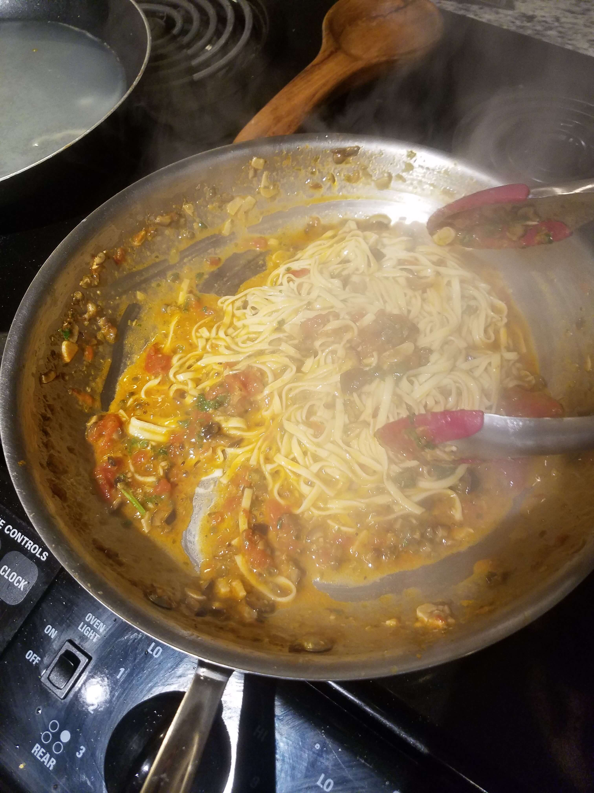

Putanesca translates to "in the style of a prostitute" in Italian. The myth goes that in order to attract "customers" brothels would make this fragrent sauce to draw them in. I don't know if that has any truth to it, but this sauce is incredible none the less.
Puttanesca does involve strong profiles such as garlic and capers, so if you don't like flavorful food either cut back most of the ingredients or skip this one.
First, get all the ingredients prepped. Things come together pretty quickly in this recipe, and having stuff chopped makes your job easier.
Slice your garlic, and chop the olives, capers, and anchovies. Additionally, measure out your tomatoes and use your hands to crush them. I always use the whole canned tomatoes in my dishes because the diced/crushed canned ones have calcium chloride as a firming agent.
Add the olive oil, garlic, anchovies, and red pepper flakes to the saute pan.
Get your heat to medium and cook them until the garlic is a pale golden color.
Have your olives and capers ready though, beause once the garlic is ready, it can quickly shoot into burnt!
Once your garlic is golden, add your capers and olives, quickly stir to combine
Now add your wine and give everything a stir! Lower the heat enough to get the sauce at a low simmer
Like I said in my other sauce recipe, please use a decent bottle of wine! It's a big part of the dish so improving the quailty of the alcohol will improve the quality of the sauce!
When your wine reduces to an almost "syrup" like consistency, add your tomatoes in and bring to a very low simmer.
The acid in the tomatoes needs time to meld with the rest of the sauce, which is why a minimum of 20 minutes is always recommended. I often let it go for about 40 minutes while I chop the parsley, grate cheese and do other things in the kitchen (washing dishes and equipment is my recommendation).
To prevent the sauce from getting too thick, I will add a few tablespooons of water to the tomato can, swirl it around (like a glass of wine) and add it to the sauce. Add more water at any point if your think it needs it, but hold off on that water towards the end.
Its time to get your pasta cooking. Here's a great trick I learned: boil your pasta in a pan! It takes far less water, which means that getting that H20 to boil takes much less time! We also want to concentrate as much starch coming out of the pasta as possible. Store-bought spaghetti will just perfectly it in a 12 inch skillet.
Regardless if you use fresh pasta or store pasta, I very much recommend the pan. The starch helps emulsify the dish which in turn will help the sauce cling to the noodles, which I think we can all agree is a good thing.
But back to that pasta water. The starchy water is what makes our sauce "creamy". Since our sauce has been cooking for awhile, it will need some hydration to thin it out. So about halfway through your pasta cooking, take some water out and add it to pan.
*Note: Depending on how much pasta you are cooking you may want to remove some sauce from the pan. Save it in a container for future meals!
When your pasta is al dente, drag it out of the frying pan and into the sauce. Let some of the pasta water come along with it too, reserve the rest of the liquid.
Crank the heat to high, add your cheese and parsley, and stir, stir, stir!
It's gonna look a little soupy and thin at first, but remember that the pasta still needs a minute or two to finish cooking. So enjoy the pasta facial while you stir. Add some reserved liquid if needed.
When the sauce looks thick and creamy and pasta is cooked you are done! Serve it up
Garnish with parsley and some additional cheese if you want.
Enjoy!